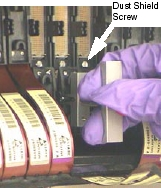
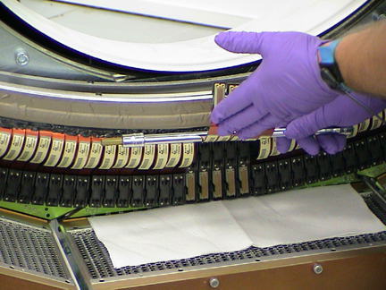

Operating Documentation
Direction 5196839-800, Rev# 6
RT16 and Xtra Service Info Adv
Operating Documentation |
| Required Persons | Preliminary Reqs | Procedure | Finalization |
|---|---|---|---|
| 1 |
The following procedure should be followed when DAS converter boards and/or chassis need cleaning, or converter boards are replaced for microphonics or noise, resulting in image artifacts (rings, bands, streaks, and smudges).
| Last Revised: | March 15, 2005 |
| Item | Qty | Effectivity | Part# | Manufacturer | |
|---|---|---|---|---|---|
| Static Wrist Strap and cord | 1 | - | - | - | |
| Lint free towels | 1 | - | - | - | |
| Aero Duster spray | 1 | - | - | - | |
| Amax Contact, and Circuit Cleaner | - | - | - | ||
| DAS/DET Interface Kit: Contains Nitrile Gloves, Aero Duster Spray System (spray nozzle) for use with Aero Duster, and static bags needed by this procedure. | 1 | - | - | - | |
| Aero Duster | 1 | - | - | - | |
| Screw driver (flat) size # 6 | 1 | - | - | - | |
| Magnifying Glass, 3 inch diameter recommended | 1 | - | - | - | |
| High Output Ionizing Fan (Refer to the ESD Management and Device Handling procedure located under “Safety” for proper use instructions) | 1 | - | - | - | |
| Store Amax Cleaner at Site with MSDS document. | |
| Do not store in the company car. | |
| Use spray as directed in this procedure. Safety glasses and Nitrile gloves must be worn when using the spray. |
| Failure to follow correct procedures can result in bent or broken Interposer pins. This can result in intermittent artifacts, noise, or DAS Chassis/Detector replacement. never use screwdrivers, pocket knives etc, to service the DDIF. | |
| When using Aero Duster, do not invert the can as this will cause liquid to come out. Testing has shown that this can cause a large static charge to develop where the liquid spray hits. | |
| Follow ALL required safety and PPE procedures customary for your organization when working on this product. | |
| Condition | Reference | Eff |
|---|---|---|
Only trained service personnel should service the GE CT Scanner. | - | - |
Refer to DAS 16 DAS Detector Interface (DDIF) procedure for important information related to safe handling of the DDIF detector flexes. | - | - |
The following steps are to be performed only if:
Image Quality or DAS 16 performance issues are present.
Extremely dusty or dirty room environment is present.
Take DC Noise and DC Offsets baseline scan using DASTOOLS Manual test (use default settings) to establish the current noise characteristics of DAS. Do not troubleshoot any noise failures until after the cleaning.
Use the DASTools Viewlog to view the results of the baseline noise test to see the channels that violate the noise specification. The specifications are shown next to the actual data for the failed channels and shows the converter card number.
Position the table to its lowest position.
You will be sitting on the edge of the cradle to work on the DAS.
Remove gantry right side cover, and turn OFF all three (3) service switches.
Refer to Parts Replacement → Gantry → Enclosure → (Cover Removal Procedure).
Continue to open the gantry, by removing applicable gantry covers.
Refer to Parts Replacement → Gantry → Enclosure → (Cover Removal Procedure).
Turn off all three switches (Axial Drive, HVDC, 120VAC).
Lock the gantry in position, using the rotational lock.
Refer to “Rotational Locking Pin” within Equipment Service - Gantry, located in the Safety tab of this publication, for details.
All protective ESD materials should be in place (i.e. wrist straps, Nitrile gloves, Amax, and Aero Duster; ionizing fan set up at far end of the patient table).
Remove DAS Air Plenum.
Perform general cleaning procedure on air plenum as outlined in MDAS 16 General Cleaning.
| Never use a vacuum cleaner to clean the DDIF. Damage to the detector can result, requiring detector replacement. | |
Use assembled Aero Duster spray and nozzle, blow off the dust. Pay particular attention to the spaces between the Flex connections.
Use Ionizing fan to remove any built-up charges.
| STOP! Assemble system and test to see if issue is resolved. The following steps should be performed only if the above steps failed to resolve the issue. | |
| Use extreme care not to pull on the flex leads. Let the flex extraction tool do the work. Failure to be gentle can result in detector damage, requiring detector replacement. | |
Using the Flex Extraction Tool, disconnect both A and B flexes from the DDIF. See Illustration 1 and Illustration 2. Refer to DAS 16 DDIF Tools for details on the Flex Extraction Tool.
Disconnect the failing flexes identified in your analysis and each adjacent flex.
Disconnect both inner and outer flexes.
Connect the special flex grounding straps provided in the DAS/Detector Kit shipped with the system.
Illustration 1: "A" Row Flex Removal and Work Clearance

Illustration 2: "B" Row Flex Removal

Remove the Dust Shield after both flexes have been disconnected.
Use the provided screwdriver bit found in the DAS/Detector Service kit.
Remove any metal particles that might be magnetically attached to your screwdriver.
Using the Interposer Removal Tool, remove both Interposers. Refer to DAS 16 DDIF Tools for details on the Interposer Removal Tool.
Inspect Interposers with a magnifying glass.
Look for bent or broken pins.
If broken pins are observed and found lodged in the female connector, go to “Broken Interposer Pin Removal,” in Interposer Replacement.
Using the magnifying glass, inspect the Dust Shield Retainer Clip.
Look for chipped or broken corners.
If chips are observed, inspect the immediate area for the missing chips. Remove these chips as this can result in microphonics noise.
If retainer clip is cracked or severely damaged, go to “Dust Shield Retainer Clip Replacement,” for replacement instructions in Interposer Replacement.
| Make sure you remove the interposers at a right angle to the backplane. Inspect the pins after removal to ensure no pins have been bent. Do not attempt to straighten bent pins. Replace the interposer if bent pins or more than 5 degrees of motion on loose pins is observed. | |
| Do not spray Amax directly on the detector or flex leads. Amax contains chemicals that can dissolve adhesives used in the construction of the detector. | |
Using Amax spray cleaner, spray away from the detector toward the DAS chassis.
Position the DAS at 6 O’clock.
Carefully bend the flex leads out of the way. A ratchet extension works well to prevent creasing of the flex. See Illustration 3.
Use lint free cloth to absorb excess AMAX and protect DAS Chassis. See Illustration 3.
Support flexes with one hand and spray AMAX with the other. See Illustration 4.
Allow Amax to fully dry before assembly.
Illustration 3: DDIF Flex Handling

Illustration 4: DDIF Cleaning with AMAX

Use Amax spray cleaner to clean the interposers.
Allow Amax to fully dry before assembly.
Use the Ionizing Fan to remove any built-up charge in the area.
Carefully install the interposers using your Nitrile glove protected fingers.
See Illustration 5, which shows the wrong method.
See Illustration 6, which shows the correct method.
Do not force the interposer. Bent or broken pins will result.
Install the Dust Shield.
Use the screwdriver bit provided in the DAS/Detector Service kit. Torque to: [0.35 Nm, 3 in-lbs, 3.6 kg-cm].
Remove any metal particles that might be magnetically attached to your screwdriver.
Do not over tighten the fastener.
Install the flex leads using your Nitrile glove protected fingers.
See Illustration 5, which shows the wrong method.
See Illustration 6, which shows the correct method.
Do not force the flex lead. Bent or broken pins will result.
Illustration 5: Wrong Interposer and Flex Lead Installation Method
Illustration 6: Correct Interposer and Flex Lead Installation Method

Assemble the rest of the gantry.
Restore power.
Perform general cleaning procedure on air plenum as outlined in DAS 16 General Cleaning if not done as directed at the beginning of this procedure.
It takes two minutes of warm-up time for every minute the DAS was turned off, up to one hour. The DAS can be warming up while the Air Plenum is being cleaned, before performing Fastcal or Image Quality testing.
Perform Image Quality testing.
No finalization required.